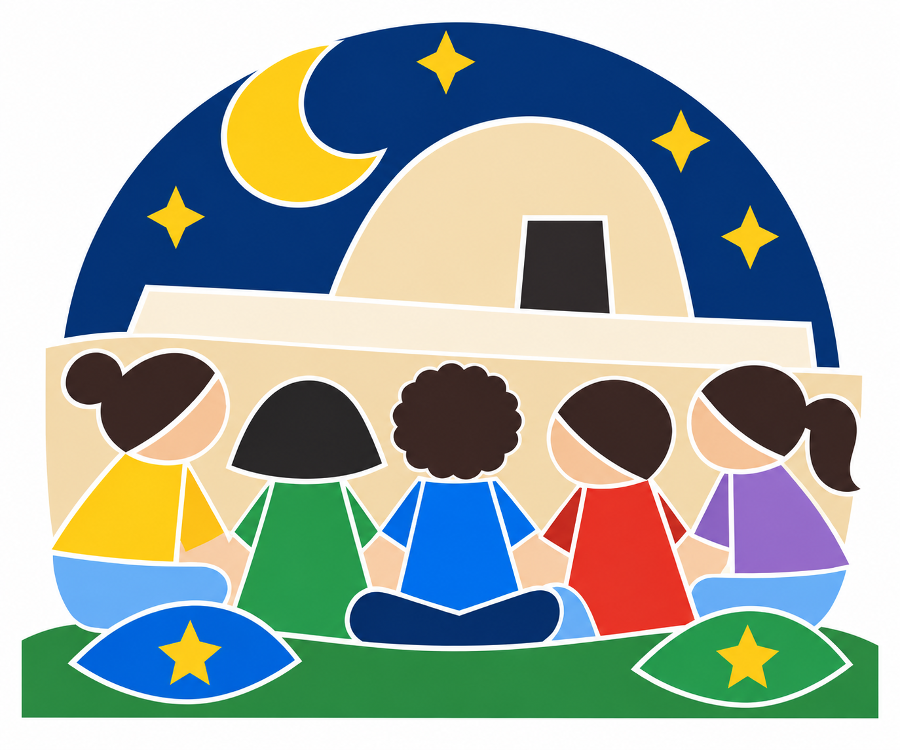

Una experiencia diferente
Las dormilonas son encuentros especiales destinados a los niños y niñas que participan de los talleres del Molino. Son una oportunidad para salir de la rutina y vivir una experiencia distinta, con actividades, juegos y propuestas pensadas especialmente para disfrutar de una noche en grupo.
Nuevas experiencias
Cada encuentro propone actividades diferentes que invitan a explorar, participar y descubrir nuevas formas de aprender y divertirse.
Vínculos que crecen
Compartir fuera del horario habitual de los talleres permite fortalecer las relaciones entre compañeros, generar confianza y construir recuerdos compartidos.
Un espacio familiar y seguro
La actividad se desarrolla en las instalaciones del Molino, un lugar que los niños ya conocen y frecuentan durante el año. Esto les permite vivir la experiencia en un entorno familiar, acompañados por el equipo y sintiéndose parte de un espacio propio.
Descargar autorización para la dormilona